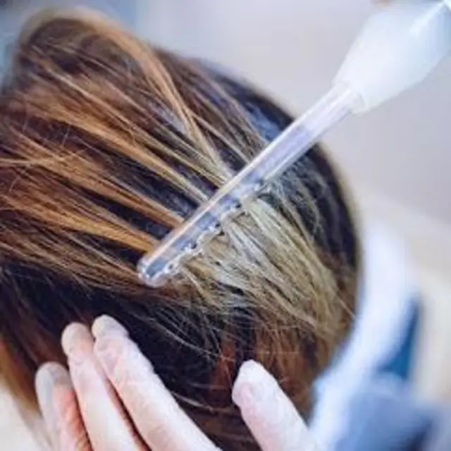
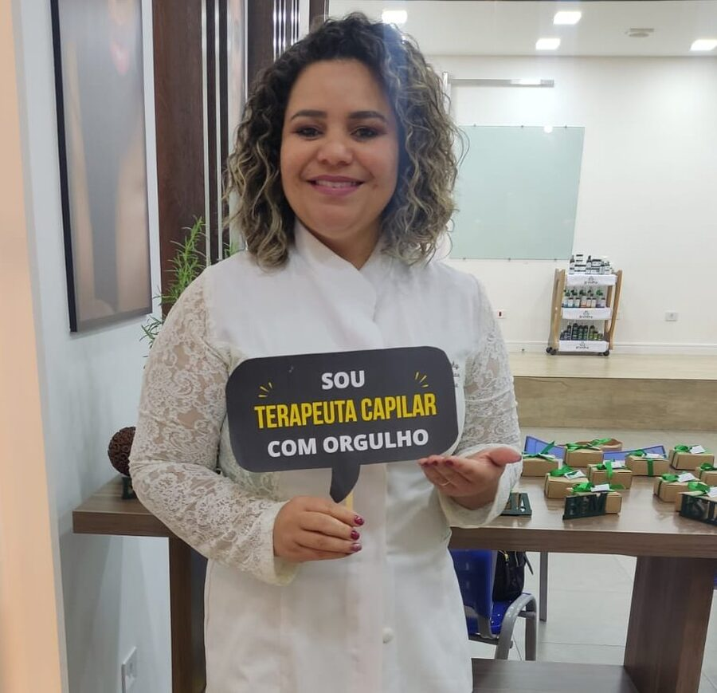
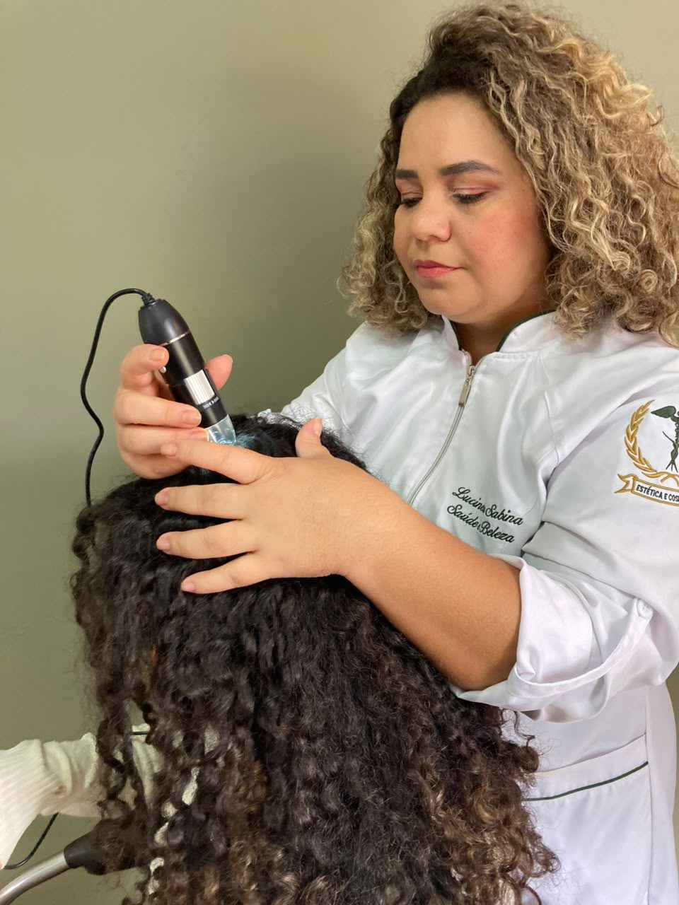
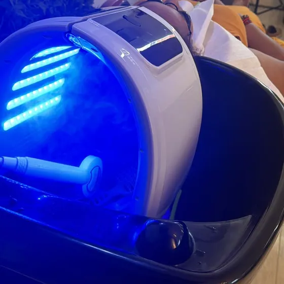
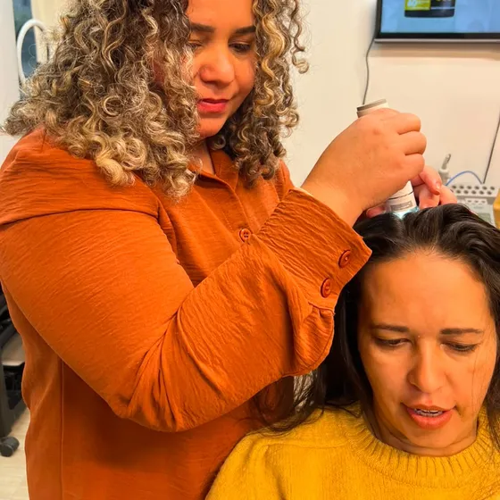
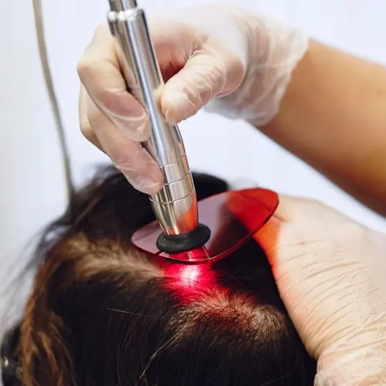
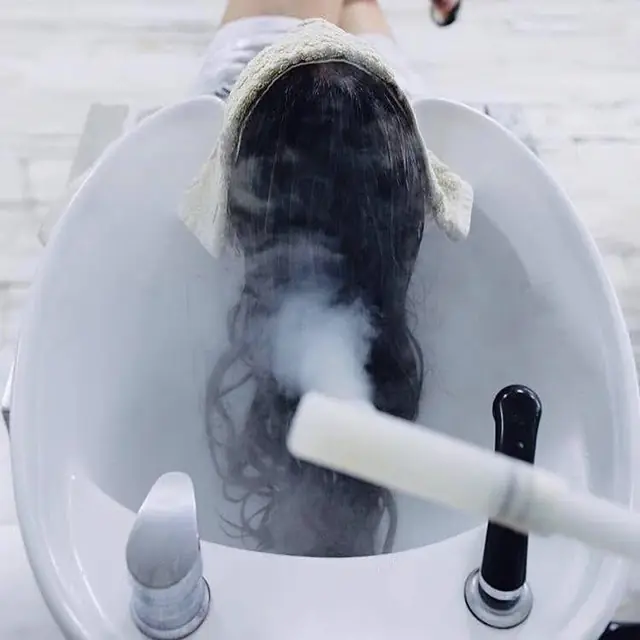
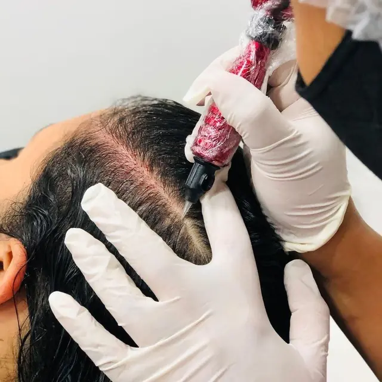

Alta Frequência
Estímulo da circulação e ação bactericida no couro cabeludo.
Terapia capilar · Tricologia
Fios saudáveis começam na raiz.

Quem cuida de você
Lucinéia Sabina
Profissional da beleza há mais de 15 anos, com diversas formações e especializações na área.
Especialista em terapia capilar, dedica o trabalho do estúdio à saúde do couro cabeludo: cada paciente passa por uma avaliação e recebe um protocolo de tratamento pensado para a sua necessidade.
O que é
Baseada na tricologia, a ciência que estuda o couro cabeludo e os fios, a terapia capilar é um acompanhamento feito para tratar desequilíbrios, prevenir problemas e manter a saúde do couro cabeludo. O cuidado começa pela raiz, e não só pelo comprimento.
Queda acima do normal, contínua ou em fases.
Fios mais finos e couro cabeludo mais aparente.
Descamação, crostas e acúmulo no couro cabeludo.
Raiz que pesa e engordura pouco tempo depois da lavagem.
Couro cabeludo irritado, sensível ou com ardência.
Fios quebradiços, sem força e com crescimento lento.



Como funciona
Análise do couro cabeludo e dos fios com tricoscópio, que amplia a imagem e mostra o que não se vê a olho nu, e conversa sobre histórico, hábitos e queixas.
Com base na avaliação, é montado um plano de tratamento sob medida, com as técnicas e os ativos indicados para o seu caso.
O tratamento é feito em sessões, combinando tecnologias como alta frequência, laser, ozônio e microagulhamento.
A evolução é registrada com fotos e reavaliações periódicas, para ajustar o protocolo e acompanhar cada resultado.
Quando a queixa pede investigação médica, a orientação é procurar um dermatologista; os dois acompanhamentos podem caminhar juntos.
Agendar minha avaliaçãoTecnologias
Cada protocolo combina as técnicas indicadas na avaliação, sempre de acordo com a necessidade do couro cabeludo.

Estímulo da circulação e ação bactericida no couro cabeludo.

Fotobiomodulação que apoia o fortalecimento dos fios.

Higienização profunda com ação antisséptica.

Indução percutânea que favorece a absorção dos ativos.
Outros serviços
Do corte à manicure, o estúdio atende também o dia a dia da sua beleza.
Portfólio
Agende sua avaliação